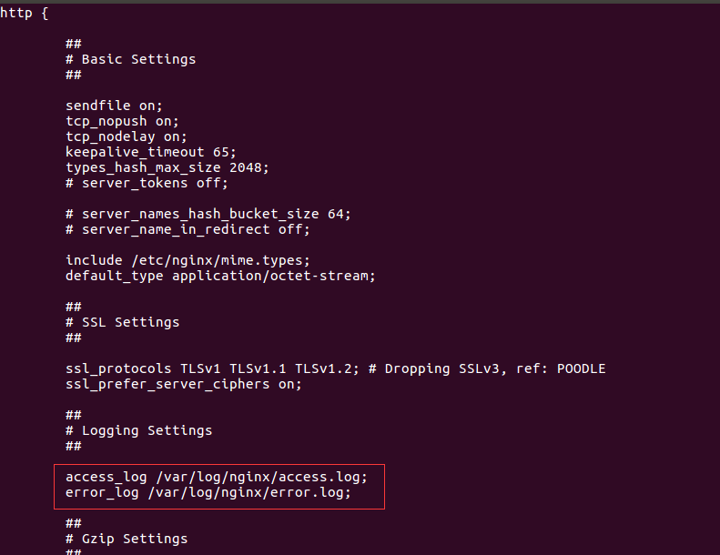

日志功能
日志简介
Nginx默认提供了两个日志文件 access.log和error.log，通过access.log可以得到用户请求的相关信息；通过error.log可以获取某个web服务故障或其性能瓶颈等信息。
而且nginx的日志支持定制化格式，这样我们就可以根据实际的业务情况更好的高效工作。最常见的场景就是获取客户端的IP，记录用户访问量。
基本配置
查看 /etc/nginx/nginx.conf
access_log /var/log/nginx/access.log;
error_log /var/log/nginx/error.log;

日志样式
默认日志格式
log_format combined '$remote_addr - $remote_user [$time_local] '
'"$request" $status $body_bytes_sent '
'"$http_referer" "$http_user_agent"';
效果
python@ubuntu:/etc/nginx$ tail /var/log/nginx/access.log
192.168.229.128 - - [06/Mar/2018:21:06:14 +0800] "GET / HTTP/1.1" 200 13 "-" "Mozilla/5.0 (X11; Linux x86_64) AppleWebKit/537.36 (KHTML, like Gecko) Chrome/50.0.2661.102 Safari/537.36"
192.168.229.128 - - [06/Mar/2018:21:16:46 +0800] "GET / HTTP/1.1" 200 13 "-" "Mozilla/5.0 (X11; Linux x86_64) AppleWebKit/537.36 (KHTML, like Gecko) Chrome/50.0.2661.102 Safari/537.36"
nginx常用内置变量
nginx常用的内置变量主要是用来分析日志中的http记录的，我们可以根据内置的变量精确的获取相关的信息
默认变量
| $remote_addr | 客户端的ip地址(代理服务器，显示代理服务ip) |
|---|---|
| $remote_user | 用于记录远程客户端的用户名称（一般为“-”） |
| $time_local | 用于记录访问时间和时区 |
| $request | 用于记录请求的url以及请求方法 |
| $status | 响应状态码，例如：200成功、404页面找不到等。 |
| $body_bytes_sent | 给客户端发送的文件主体内容字节数 |
| $http_user_agent | 用户所使用的代理（一般为浏览器） |
| $http_x_forwarded_for | 可以记录客户端IP，通过代理服务器来记录客户端的ip地址 |
| $http_referer | 可以记录用户是从哪个链接访问过来的 |
其他常用变量
| $request_uri | 包含请求参数的原始URI，不包含主机名 |
|---|---|
| $uri | 不带请求参数的当前URI，不包含主机名 |
| $http_x_forwarded_for | 可以记录客户端IP，通过代理服务器来记录客户端的ip地址 |
| $http_x_real_ip | 可以记录客户端IP，通过代理服务器来记录客户端的ip地址 |
| $args | 这个变量等于请求行中的参数，同$query_string |
| $host | 请求主机头字段，否则为服务器名称。 |
| $scheme | HTTP方法（如http，https） |
| $document_uri | 与$uri相同 |
示例：
例：http://localhost:10086/itcast/index.html
$host localhost
$server_port 10086
$request_uri /itcast/index.html
$document_uri /itcast/index.html
$document_root /var/www/html
$request_filename /var/www/html/itcast/index.html